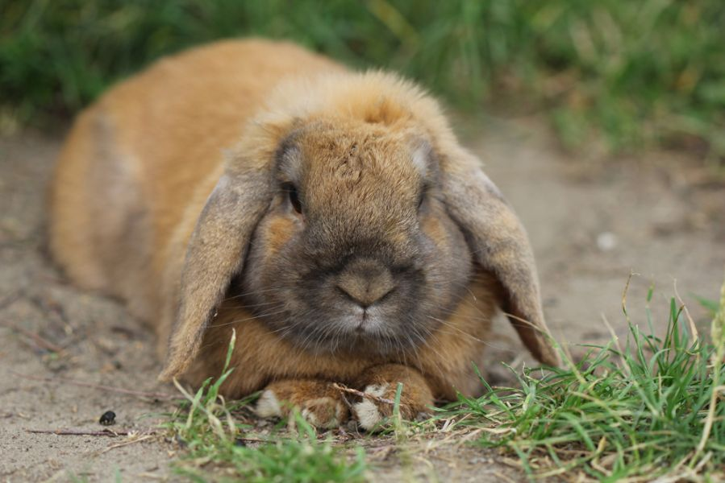
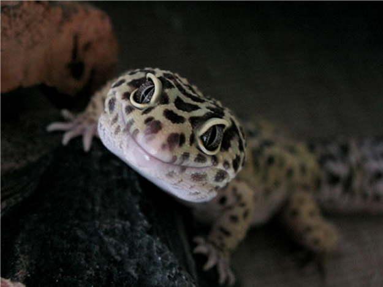
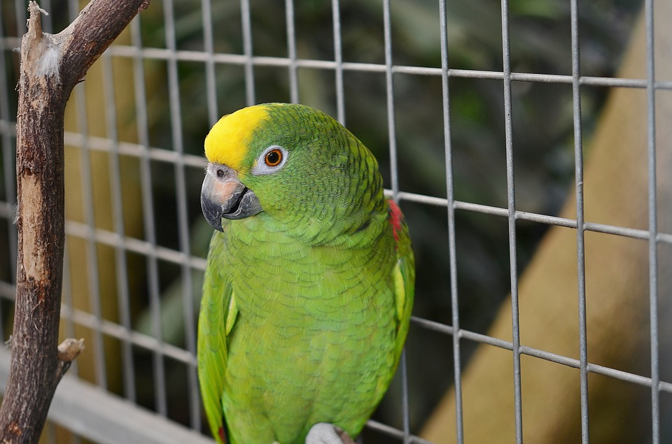

Animal Rescue Services
Home Join Us! Re-Home A Dog Re-Home A Cat
Something Different
https://regalanimalhospital.com/keeping-your-guinea-pigs-happy-and-healthy/
This is May. She is a year old guinea pig. She's very friendly and loves to run in her wheel
https://www.pets4homes.co.uk/pet-advice/ten-tips-for-keeping-your-rabbit-happy-and-healthy-for-life.html
This is Ruffus. He is a 2 year old rabbit. He likes to stay in his cage and does his own thing. So, he is perfect for a first pet!

http://joannecasey.blogspot.com/2013/03/happy-looking-geckos.html
This is Nyla. She is a spotted gecko. She loves her tererrium to be filled with lots of things to hide under. She also loves to be held and climb all over you.
http://thepetshow.com/guide-to-a-healthy-happy-parrot/
This is Hamlet. He is a talking parrot. He picks up human phrases very easily and loves sitting on your shoulder.
For more information animals check out this link: Visit NSPCA!

Visit us at
Nova Scotia SPCA
PO Box 38073 STN Burnside
Dartmouth, NS
B3B 1X2